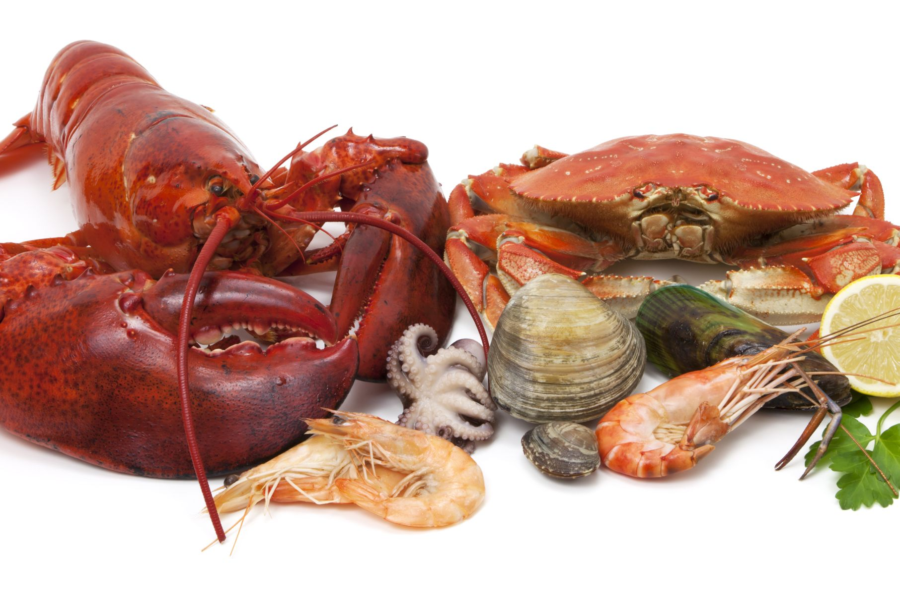

I. Arts and Media
a. Freedom of expression is our number one priority therefore:
1. Any and all types of media are allowed - the government cannot judge its citizens about their interests
I. Any and all opinions about the government are allowed - the government cannot control the opinions of its citizens and has to respect their wishes/opinions
2. Any and all types of arts are allowed
3. Media is not controlled by anyone and our citizens are encouraged to speak up if they feel if they are being controlled or restricted
4. We encourage and support our artists by
I. supplying them with whatever they need in order to express themselves better and to continue their passion in their chosen medium
5. We also advise our citizens to take up a musical instrument in order to help them with mentally and physically, as music may be used as an outlet
II. Traditional dishes
a. Any dishes that include lobsters, oysters, and clams are considered traditional dishes
1. As those are main our main food sources
b. Our list of traditional dishes are always growing as our citizens come up with new and creative ways to prepare lobsters, oysters, and clams
c. Traditional dishes are prepared and eaten as a group
1. in order to symbolize unity
d. Traditional dishes must be eaten as soon as they are prepared
1. We advise that traditional dishes are eaten quickly as to decrease the chance of illness in case something goes bad (mainly in lobster dishes)
e. If you have prepared a traditional dish, we advise you to share by passing out a plate or two to other citizens
III. Traditional Music

a. Traditional music is played on the flute and ukulele
1. They can be played together as a duet or on their own
2. The tone of the music can range but the music tends to be calm and melodic
IV. Celebrations/Holidays
a. Day of Freedom - May 29th
1. Celebrate the freedom of our nation
b. Day of Relaxation - December 10th
1. A day off in order for everyone to relax
V. Religion
a. Any and all religions are practiced in our nation
1. We expect all of our citizens to honor the wishes of their peers and respect their religions and beliefs
I. Therefore, any type of discrimination against a religion or faith will not be tolerated
2. Any and religional clothing, such as hijabs, burcas, niqabs, etc, are allowed
3. We shall provide any and all places of worship
VI. Recreation
a. Any types of recreation are accepted and welcome
b. We prepare places of recreation according to the wants and needs of our citizens
1. We currently have the usual recreational activities (sports, music, arts, etc)
I. Citizens may vote or suggest recreational activities
c. Citizens may sign up for recreational activities by filling out a form
d. Citizens have access to the internet and other forms of media, therefore they may take online classes or use them for entertainment purposes as well
VII. Control
a. The government may not and will not control its citizens
b.Citizens have their own free will to do whatever they wish
1. This means that they may choose what they do such as their jobs, leisure activities, etc
c. This is no different than the community that we find ourselves in today, people have their own free will to pick and choose as they wish